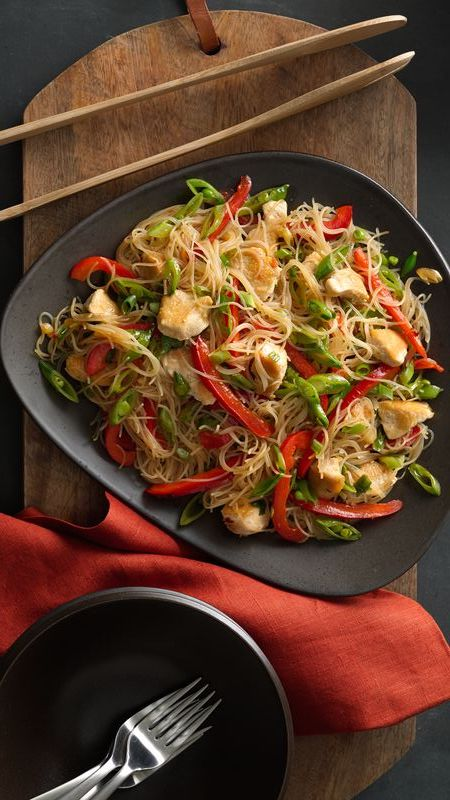

Preparation Time
30 Minutes
Ingredients
- 8 cups water
- 4 oz uncooked rice stick noodles (from 8-oz package)
- 2 tablespoons soy sauce
- 1 tablespoon sugar
- 1/2 teaspoon curry powder
- 1 teaspoon chili garlic sauce
- 1/2 cup water
- 2 tablespoons vegetable oil
-
1/2 lb boneless skinless chicken breasts, cut into 3/4-inch
pieces
- 1/4 teaspoon salt
- 1 red bell pepper, cut into thin strips (about 2 cups)
-
1/4 lb sugar snap peas, thinly sliced on the bias (about 1 1/4
cups)
-
6 green onions, greens and whites separated, thinly sliced on
the bias
Instructions
-
In large microwavable bowl, place 8 cups water. Microwave
uncovered on High 4 to 5 minutes or until boiling. Soak noodles
in hot water until softened, about 8 minutes; drain. Using
scissors, cut noodles into 4-inch pieces; set aside.
-
In small bowl, mix soy sauce, sugar, curry powder and chili
garlic sauce. Stir in 1/2 cup water.
-
In 12-inch nonstick skillet, heat vegetable oil over medium-high
heat until hot but not smoking. Add chicken; sprinkle with salt,
and cook 4 to 5 minutes, turning once, until browned on both
sides. Add bell pepper, peas and green onion whites. Cook 3 to 4
minutes, stirring frequently, until vegetables soften and begin
to brown on edges and chicken is no longer pink in center.
-
Add soy sauce mixture and drained noodles to skillet; stir to
combine. Reduce heat to medium. Simmer 1 to 2 minutes, stirring
constantly, until sauce is absorbed. Stir in green onion greens.
Divide mixture among 4 plates.